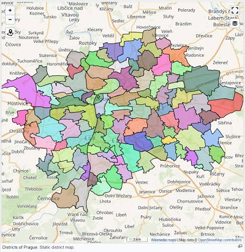

...of the city, province or country from which to extract subareas
...of the districts/countries you want to find
1 (Super-national administrations, e.g. European Union)It is often very tedious to gather all Wikidata ID's in order to create a dynamic district map for Wikivoyage. The macro on this page can automate this task.
Example: To get all the districts of Prague is just a matter of minutes with this tool.

If you have ideas on how to make this tool better please head over to the github page and participate or leave a comment down below.